译文｜如何改进网页与邮件中的链接？
为什么「在这里」「点此链接」之类的表述都很差劲？「阅读更多」到底能不能用？本文将逐一详述。
这些遍布各处的表述，大部分人并不觉得有什么问题。想想看，你在网站上、邮件里、公众号底端，都见过多少次了？
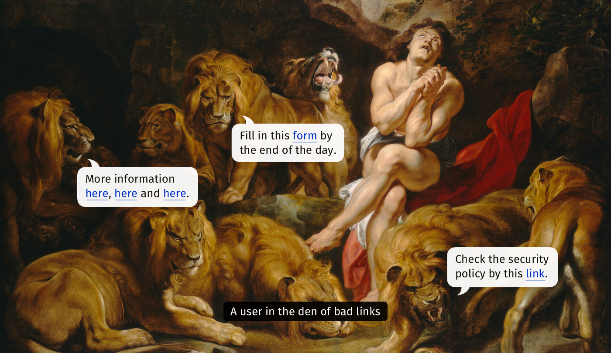
本文中，笔者会解释为什么一些常见的措辞和格式其实错误百出，并会给出更易读、信息点更明确的其他方案。
💬 有意义的链接
首先是最基础的问题：超链接到底是什么？超链接是网址（URL）和可点击元素（往往是字词，也可以是图像）的组合。这个话题就太宽泛了，所以本文只关注文本链接，具体来说，是文本链接的可用性和无障碍访问性1。
精心设计的链接能体现对读者的尊重，随手乱写的链接则让人迷惑不解又心生疑窦。如果链接对应的文字只是「这里」，就总是需要三思才能决定要不要点进去。不仅如此，这样的链接还不够透明。链接背后藏着的，是网页还是文件？是文章还是表格？到时，恐怕只有把整句乃至整段上下文再通读一遍，才能弄清。
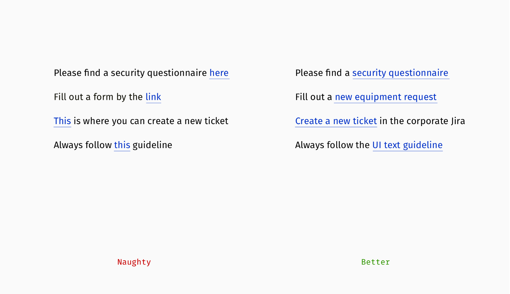
巧合的是，英文里常用的超链接表述（this、link、here、read more 等）都是四字词，和某个 f 开头 k 结尾的「常用词」有异曲同工之妙。
与之相反，将 URL 附在文意自彰的简明词语上，能让读者明白链接的目的地，点击量也更高。不仅如此，精心设计的链接脱离上下文依然可以读懂，一般同时包含主题（如安全、品牌、营销）和格式（问卷、表格、指南、政策等）。
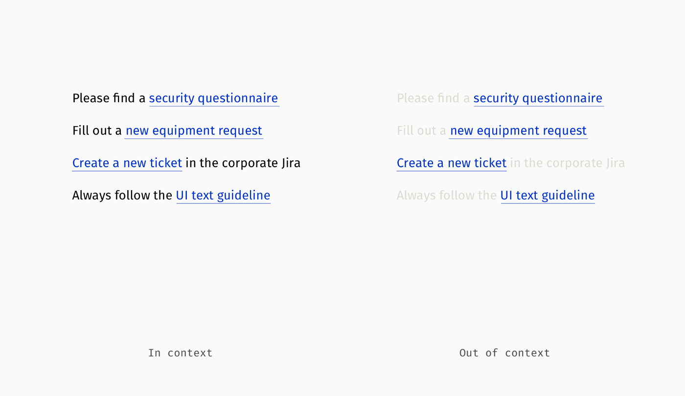
❗️ 凸显出来的 URL
如果网址比较简短，也没有「M$c0P88%X4LHr&dxQ1A」这样的东西，那直接写出链接，特别是读者需要复制、粘贴到别处的链接，效果其实也不错。
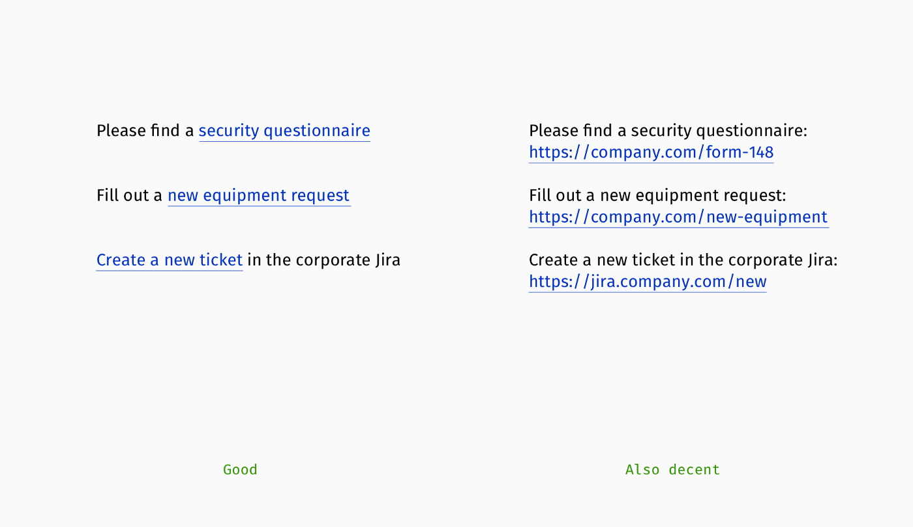
但如果链接里有一长串乱码似的符号，直接写出来往往就不是好主意了。这时，可以考虑将 URL 附在简短词语上，或是使用 Bitly、Cuttly 等短链接工具。即便如此，这些工具也不是灵丹妙药。短链接固然短，但原本有意义的短语会被随机生成的符号取代，无法提供有效信息，还令人生疑。自定义短 URL 固然可行，但通常都是付费服务。试看以下例子：
bit.ly/30SjUa4y（可疑，可读性差）；bit.ly/smashing-books（点出主题，可读性好）smash.ing/30SjUa4y（域名有辨识度）；smash.ing/books（信息完全透明）。
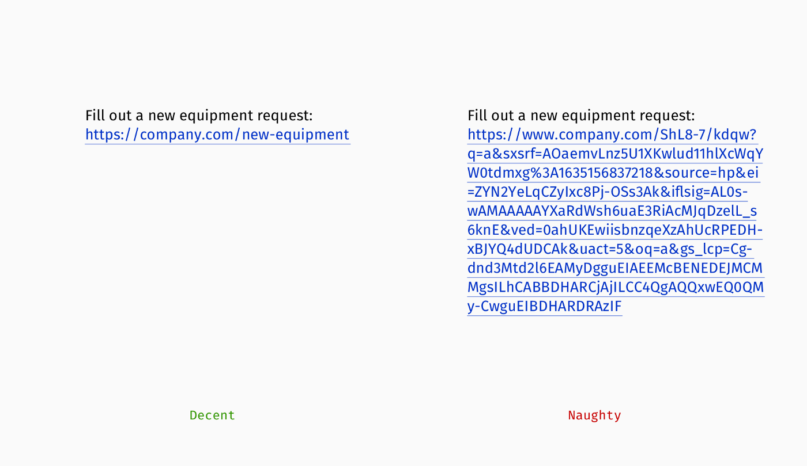
⏬ 下载链接
指向可下载资源的链接，处理的方式则有所不同。除了将其嵌入有意义的短语之外，还应向用户提示文件的格式和大小：
- 文件格式让读者了解有关数据应该如何使用（如信息是只读还是可编辑）；
- 文件大小对网费贵、网速慢、本地存储空间有限的用户至关重要。
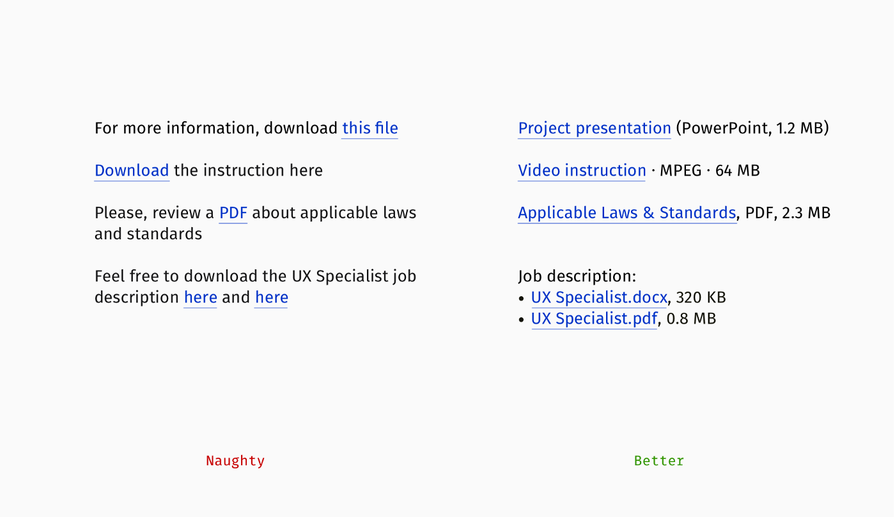
分享一大批格式、版本不同的文件时，光把每条链接写对也不够，还要确保整一套链接都方便扫读、便于取用。
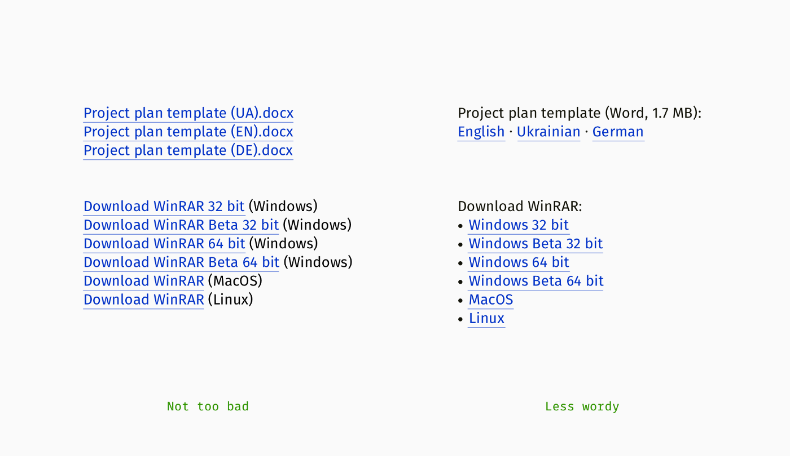
如上图所示，重复元素没有作为超链接的一部分出现。这样虽然使链接在视觉上更为简洁，但对视障用户则弊大于利。本文第六部分「无障碍链接」中，笔者会介绍如何让成块链接既保证视觉上简洁，又能为使用无障碍技术的用户提供足够导引。
🔘 重要链接「按钮化」
在网页上或邮件中，不是所有链接都同等重要。作者往往希望读者点击最主要的链接，其他的都可以一扫而过。要想让读者的注意力都集中于最首要的行动，例如「订阅简报」「购票」「获取白皮书」「下载录音」，则可以考虑将链接以按钮的形式呈现。
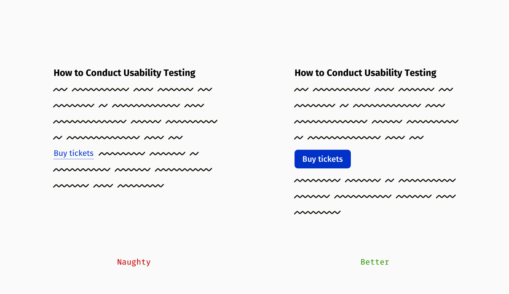
鉴于笔者不想被负责无障碍功能的同行暴打一顿，笔者有必要指出，要注意避免混淆 HTML 代码中按钮和链接的语义。本部分所讲的是将重要链接在视觉上「按钮化」，以便引导视力正常用户的注意力。但对于使用无障碍技术（此处专指屏幕阅读器）的用户，听到按钮而非链接，注定会一头雾水。按钮和链接这两种 HTML 元素的大致区别如下所示：
<button>：即一个按钮，在当前页面执行保存、提交、刷新、复制等动作。<a>：即一个链接，引导用户前往其他页面、该页面之外的其他文件，或页面上的其他位置（锚点链接）。
若出于技术或时间限制无法使用按钮，倒也有野路子可走：把链接另起一行，字形加粗，前后再加上空行。
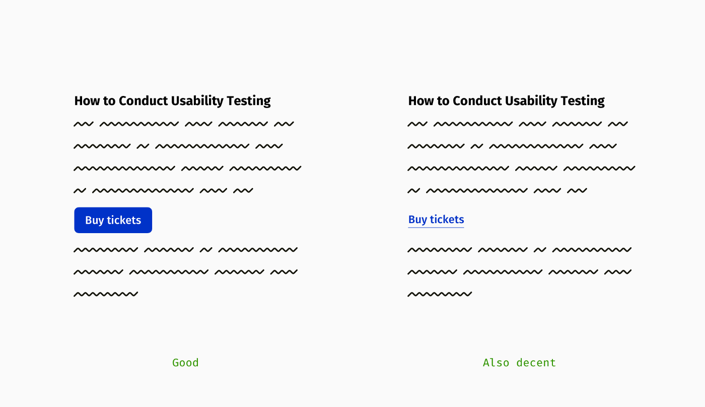
当然，按钮上的文本应该遵循以下格式：
- 要简洁（最多 4 - 5 词2）；
- 理想情况下，以动词起头（获取、购买、下载、申请等）；
- 描述与执行结果一致（避免搞出广告、注册、提供个人信息之类人神共愤的操作）。
试比较：「下载白皮书」字面上标明，点击按钮后下载应立即开始；「获取白皮书」则适合用户需提供姓名和通讯信息方可下载的场合。
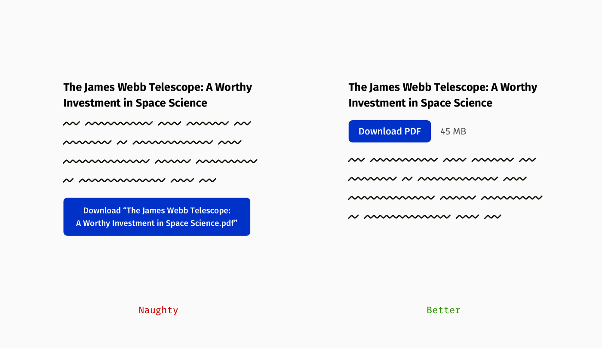
🤯 满是链接的文本
链接可说是互联网的肌理，但每句话都插进一个链接并不妥当（当然，像维基百科这类本质上就需要相互联结的知识库除外）。在一切的一切之前，先确定这些链接是不是都有必要列出。如果有可以直接删去的，那问题自不复存在。如若不然，则可以试着将链接归并成组，例如成点列举、列在段边，或者在合适的标题下单列（如「推荐阅读」「有关资源」）。
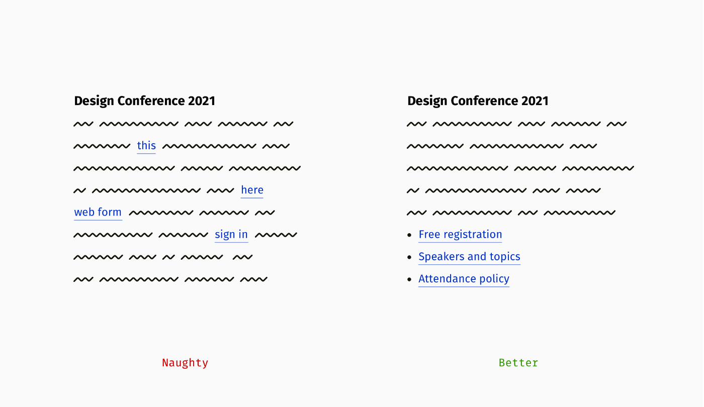
链接成组确实有用，但要是为了引发读者的行动，最主要的链接还是应该凸显出来。此时何不试试神奇的「按钮化」大法呢？
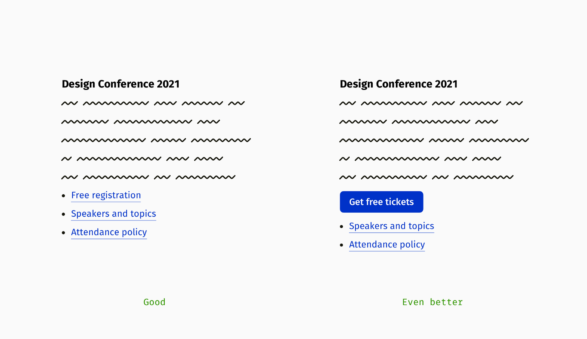
前文提到，描述性链接可用度更高，但同时也更长，在段中容易跨行出现。同其他问题相比，这一点不算致命，但若是文本中链接很多，看起来也着实令人不太舒服。
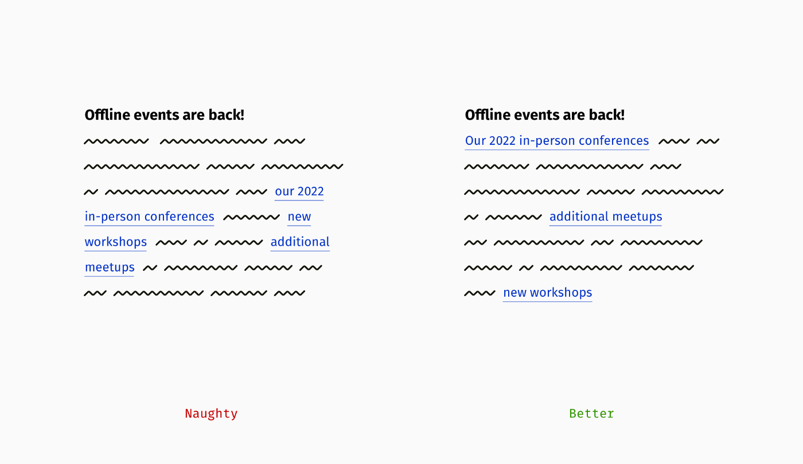
如果段落宽度固定，在撰写文本的时候就要留意防止链接跨行，比如可以以链接为段首另起一段。但由于文本渲染方式会因不同的浏览器和设备而异，总有些读者会看到错位的链接。正因如此，链接较多的情况下，用列表更保险。
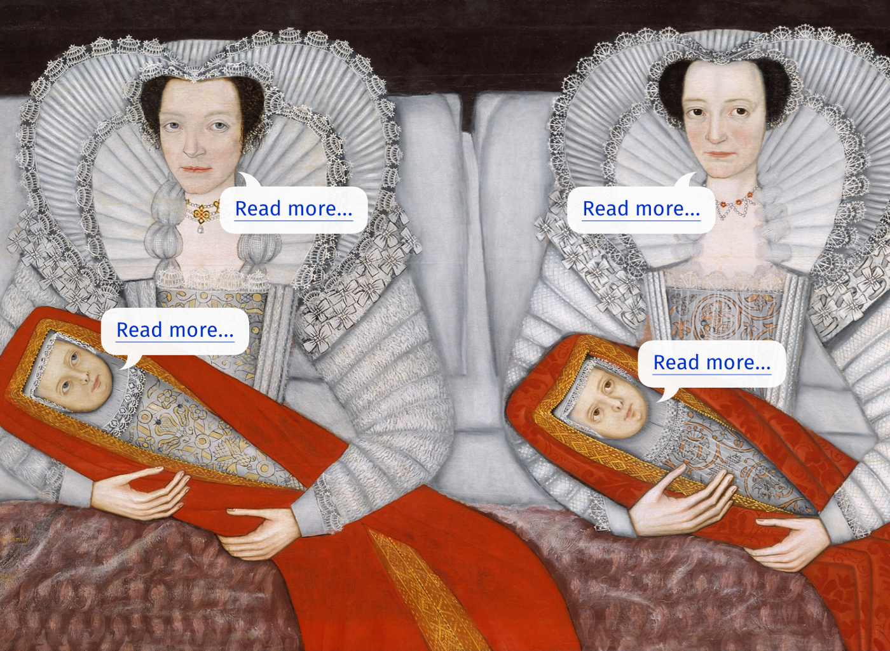
🦮 无障碍链接
无障碍链接不光是简洁直观，使用起来也不能有问题。Web 内容无障碍指南（Web Content Accessibility Guidelines, WCAG；英文、中文）作为世界上最著名的数字无障碍标准，也包括了诸多针对超链接视觉与非视觉特性的建议。
区分度
WCAG 的建议之一是，不要将颜色作为区分按钮、链接与其他文本的唯一视觉手段。把链接弄成蓝色（或其他什么颜色）不足以解决问题，因为色弱用户可能依然无法有效辨别。最典型的处理方案是给链接加下划线，或是将链接加粗。
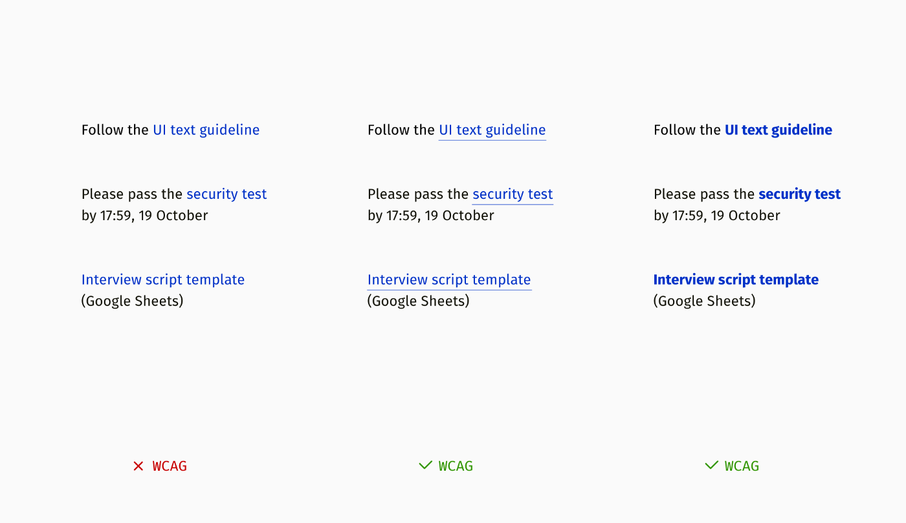
色彩对比度
作为关键可交互元素，链接还应符合有关对比度的建议。WCAG 提供两种对比度标准：
- AA 级：中级，适用于针对一般读者的网站；
- AAA 级：高级，主要用于政府网站和针对残障人群设计的网站。
例如，AA 级要求，正常字号的链接与其背景至少要有 4.5:1 的对比度，大号文本链接至少有 3:1 的对比度。
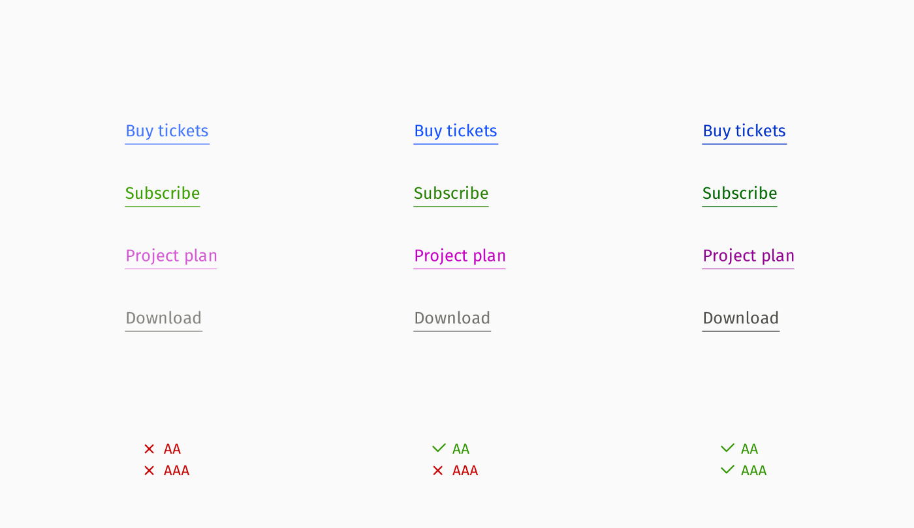
焦点状态
和其他可交互元素一样，链接也应该有可见的键盘焦点。所有常用浏览器都默认内置了无障碍焦点功能（例如 Google Chrome 中输入框、下拉菜单、按钮、链接周围的粗蓝框）。然而，一些网站会人为删改焦点，导致焦点下的链接出现颜色淡化等导致辨识度降低的现象。
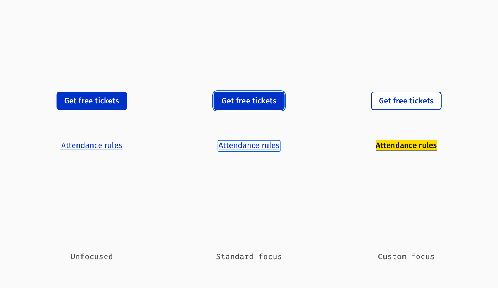
针对屏幕阅读器优化
视障用户无法用双眼浏览网页，但他们可以借助「屏幕阅读器」，用双耳感知网页的内容。这种辅助软件可以将书面文本转换成机器合成的高速语音，通过背记键盘快捷键，视障用户无需老老实实地听完整个页面上的所有内容，就能在标题、按钮、链接间导航。所以，在为无视障用户精简链接表述的同时（如不同语言版本或格式），也要为使用屏幕阅读器的用户确保链接信息清晰。不然，视障用户听到的就会是：
「乌克兰语——链接、英语——链接、德语——链接……」
链接文本应该传达出链接的功能：
「下载乌克兰语项目规划模板——链接、下载英语项目规划模板——链接……」
此外，新闻网站上，最恶心人的恐怕是听到：
「阅读全文——链接、阅读全文——链接、阅读全文——链接……」
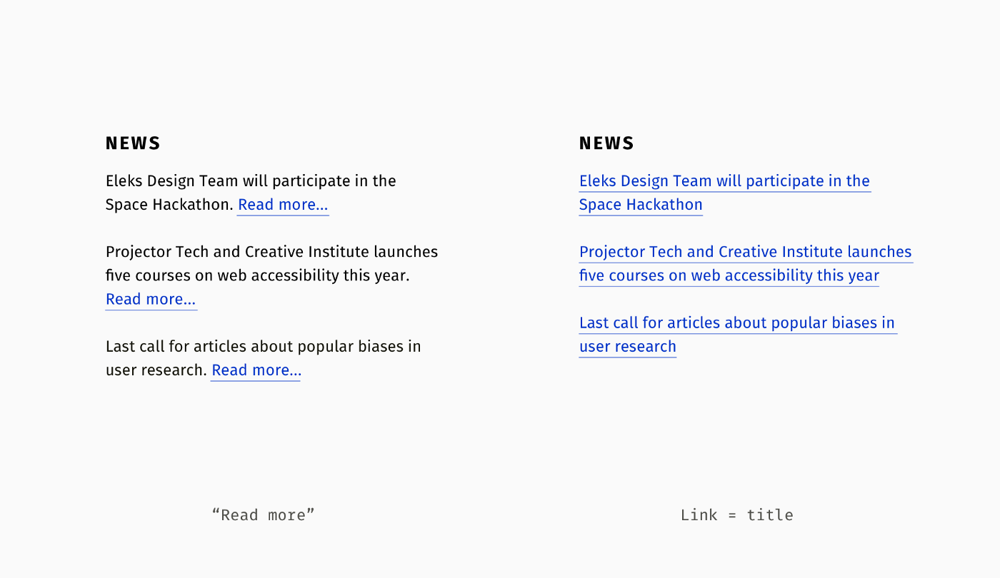
无视障读者可以猜出，「阅读全文」是和相邻最近的标题相关，但视障用户则需要专门设计的「阅读全文」。所幸， HTML 的 aria-label 属性在这里就能派上用场，可以为屏幕阅读器用户添加解释性文字。一般来说，设计师负责编写无障碍功能相关的文本，程序员负责给出最佳实现方案。下面是一段示例代码：
1 | <h4>提瓦特新闻</h4> |
如上所示，每个「阅读全文……」都为屏幕阅读器设计了额外的说明文本。但如果每个标题本身就是链接，也就没有必要用 aria-label 处理了。
1 | <h4>提瓦特新闻</h4> |
重复链接
创建多个完全一致的链接虽是通行做法，但争议也不少。在网页上的话，这就意味着，文章标题、主图像和导语上会插入同一个链接。这样做乍一看没什么问题——不管点哪里，都能访问同一篇文章。但对视障用户，同样的信息会重复三遍，拖长了他们过滤无用信息、寻找有用信息的时间。
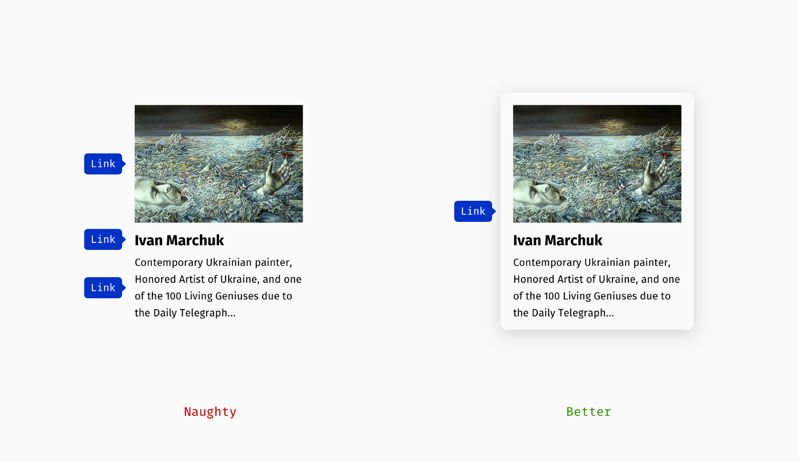
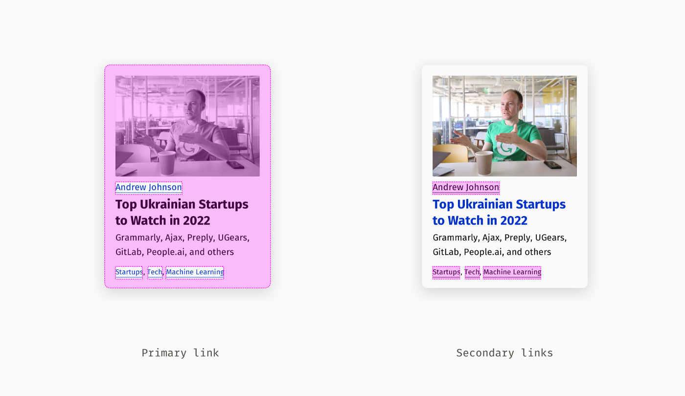
接下来谈谈电子邮件。假设我们要发送一封线上会议请柬，其中在会议介绍、时间地点以及末尾部分重复出现了同一个 Zoom 链接。这样处理不仅会引发无视障用户的杂乱之感，也会让视障用户不得不在重复链接之间跳来跳去。
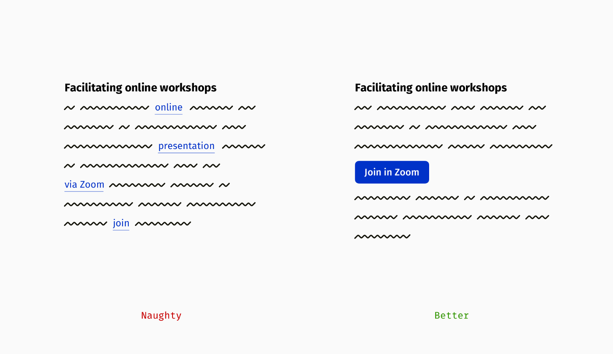
📖 参考阅读
本文仅为笔者提供的参考意见，绝非非黑即白的判断标准。好的设计千人千面，最佳做法和实际用例总有重合之处。就此话题，还可阅读以下材料：
- WCAG 的 Using Aria-Label for Link Purpose 一章；
- 非营利组织 Vision Australia 的 How to Make ‘Read more’ Links Accessible 一文；
- Nielsen Norman Group 的 Marieke McCloskey 所作 Writing Hyperlinks: Salient, Descriptive, Start with Keyword 一文。
我已开通 Telegram 频道：本夜朽舎，也开通了同名 newsletter，希望多多订阅。欢迎将您的想法、评论、意见、建议发送至 harveyjanson@icloud.com，请注明「讨论」字样，我会尽量回复。